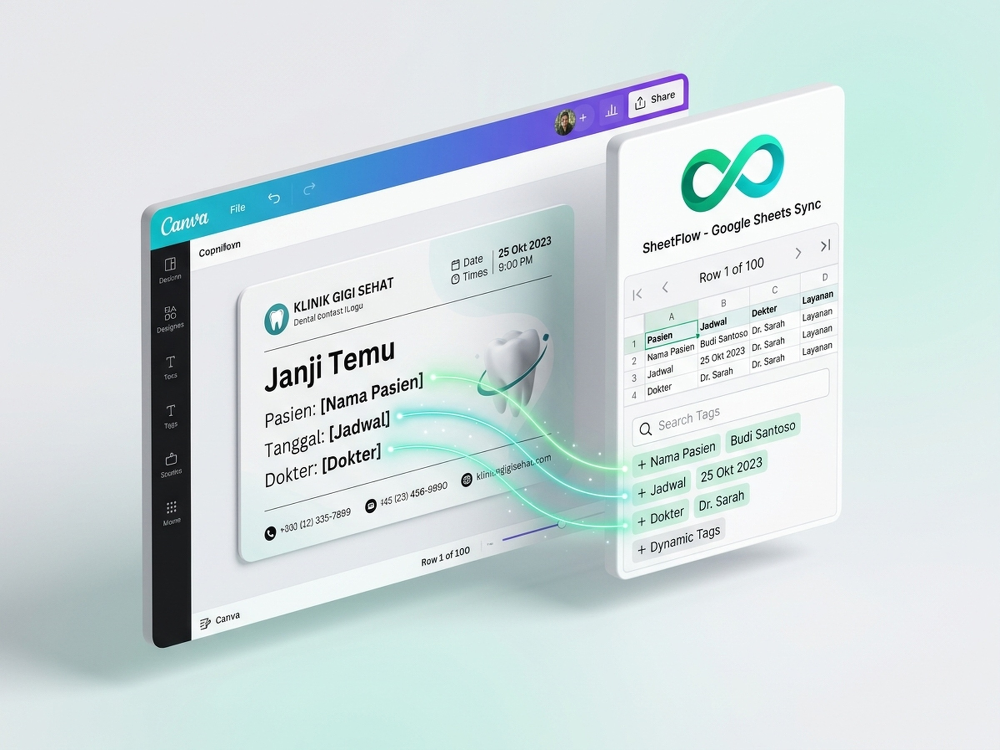
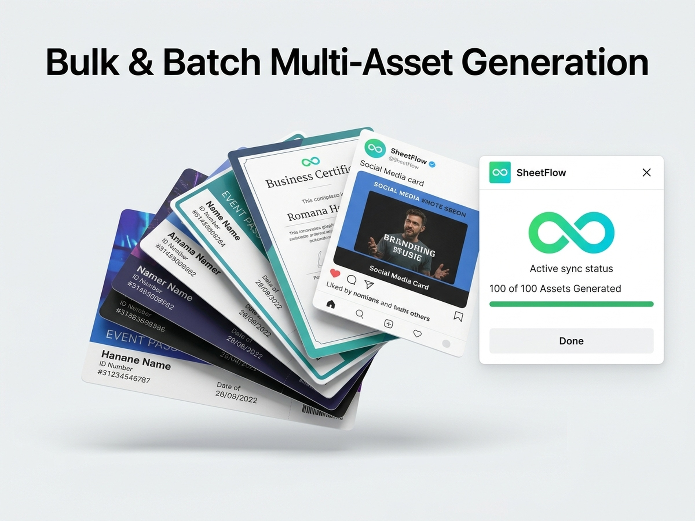
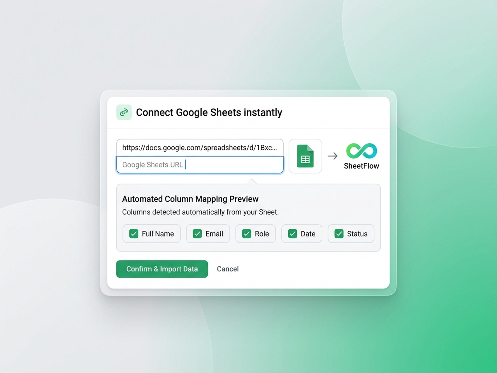

Connect tabular sheets directly to your design workflow
Map columns from your Google Sheets directly into template text elements. Navigate records row by row, update appointment cards, certificates, and badges in real time, all without storing your spreadsheet data on external servers.
How SheetFlow processes your data
A transparent three-step pipeline running entirely inside your Canva session.
Provide Sheet URL
Paste the sharing link of your public or published Google Sheet. SheetFlow extracts the Document ID and accesses the live CSV export directly via Google endpoints.
Automatic Column Parsing
SheetFlow identifies your header row and generates dynamic field tags for each column, such as Name, Date, Clinic, or Status, ready for one-click insertion.
Direct Canvas Synchronization
Step through your records with the row navigator. Each step pushes data directly into Canva text layers using the official Canva Apps SDK APIs.
Built for high-volume asset production
Real application screenshots showing SheetFlow operating in design projects.

Live Row-by-Row Navigation
Preview each dataset row before populating templates. Ideal for appointment reminders, medical clinic schedules, and custom notifications.

Multi-Asset Batch Preparation
Create batches of 100 or more event tickets, certificates, or member passes systematically from tabular sources.

Direct URL Ingestion
No database setups, credential tokens, or backend pipelines required. Connect spreadsheet URLs in under five seconds.
Frequently Asked Questions
Practical answers to setup, privacy, and operational details.